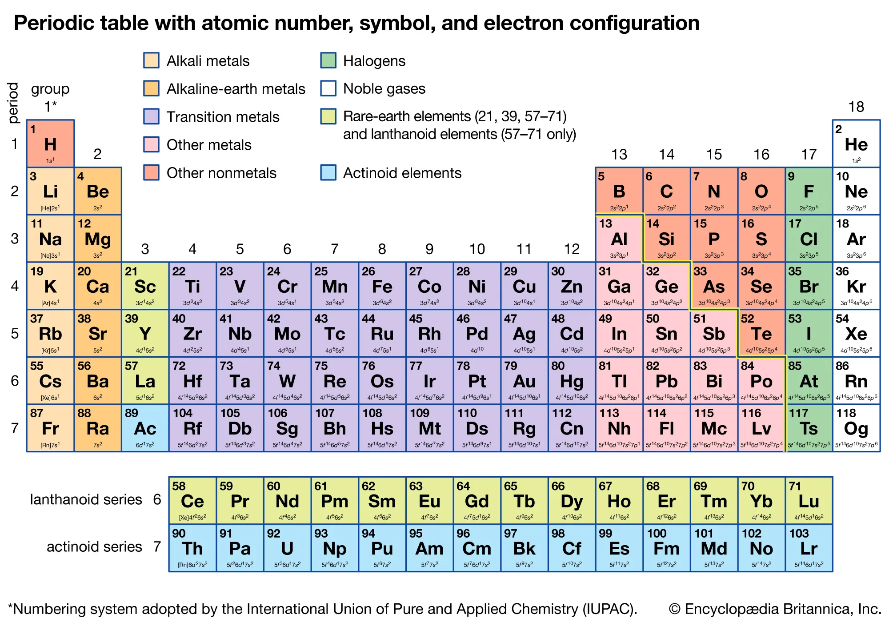

The periodic table organizes elements sequentially by atomic number. Horizontal rows are called periods, and vertical columns are called groups. Elements in the same row possess the same number of main energy levels.

All elements fall into three structural categories: Metals, Non-metals, and Metalloids (elements exhibiting properties of both, such as B, Si, Ge, As, Sb, Te, Po).
- Metals (~80% of elements): Because their outermost shells are not fully occupied, electrons can move freely between atoms, granting high electrical/thermal conductivity and chemical reactivity. Except for Mercury (Hg), all metals are solid at room temperature.
- Light Metals (s-block, IA & IIA): Very soft and chemically reactive because they readily give away the 1 or 2 electrons in their outer shell (low ionization energy).
- Transition Metals (d-block, IIIB to VIIIB): Elements filling the d-orbit. They are much stronger and harder than other metals.
- Non-metals (p-block, IIIA to VIIA): These elements need only a few electrons to complete their outer shells, making their ionization energy high. Most are gaseous, though Bromine (Br) is liquid.
- Noble Gases (Group VIIIA): Have fully filled final orbitals, making them chemically inert.
Practice Exercises
Test your knowledge on the Periodic Table.
1. Roughly what percentage of the periodic table is made up of metals?
A) 50%
B) 80%
C) 95%
2. Which is the only metal that is NOT solid at room temperature?
A) Bromine (Br)
B) Gallium (Ga)
C) Mercury (Hg)
3. Which group of elements contains the highly inert Noble Gases?
A) Group IA
B) Group VIIA
C) Group VIIIA
4. Transition metals, known for being stronger and harder, belong to which block of the periodic table?
A) s-block
B) p-block
C) d-block